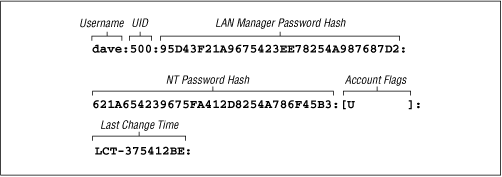

Using Samba
Robert Eckstein, David Collier-Brown, Peter Kelly1st Edition November 1999
1-56592-449-5, Order Number: 4495
416 pages, $34.95
|
|
Using SambaRobert Eckstein, David Collier-Brown, Peter Kelly1st Edition November 1999 1-56592-449-5, Order Number: 4495 416 pages, $34.95 |
6.4 Passwords
Passwords are a thorny issue with Samba. So much so, in fact, that they are almost always the first major problem that users encounter when they install Samba, and generate by far the most questions sent to Samba support groups. In previous chapters, we've gotten around the need for passwords by placing the
guestokoption in each of our configuration files, which allows connections without authenticating passwords. However, at this point, we need to delve deeper into Samba to discover what is happening on the network.Passwords sent from individual clients can be either encrypted or non-encrypted. Encrypted passwords are, of course, more secure. A non-encrypted password can be easily read with a packet sniffing program, such as the modified tcpdump program for Samba that we used in Chapter 3, Configuring Windows Clients. Whether passwords are encrypted depends on the operating system that the client is using to connect to the Samba server. Table 6.5 lists which Windows operating systems encrypt their passwords before sending them to the primary domain controller for authentication. If your client is not Windows, check the system documentation to see if SMB passwords are encrypted.
Table 6.5: Windows Operating Systems with Encrypted Passwords Operating System
Encrypted or Non-encrypted
Windows 95Non-encrypted
Windows 95 with SMB Update
Encrypted
Windows 98
Encrypted
Windows NT 3. x
Non-encrypted
Windows NT 4.0 before SP
3Non-encrypted
Windows NT 4.0 after SP 3
Encrypted
There are actually two different encryption methods used: one for Windows 95 and 98 clients that reuses Microsoft's LAN Manager encryption style, and a separate one for Windows NT clients and servers. Windows 95 and 98 use an older encryption system inherited from the LAN Manager network software, while Windows NT clients and servers use a newer encryption system.
If encrypted passwords are supported, Samba stores the encrypted passwords in a file called smbpasswd. By default, this file is located in the private directory of the Samba distribution (/usr/local/samba/private). At the same time, the client stores an encrypted version of a user's password on its own system. The plaintext password is never stored on either system. Each system encrypts the password automatically using a known algorithm when the password is set or changed.
When a client requests a connection to an SMB server that supports encrypted passwords (such as Samba or Windows NT), the two computers undergo the following negotiations:
The client attempts to negotiate a protocol with the server.
The server responds with a protocol and indicates that it supports encrypted passwords. At this time, it sends back a randomly-generated 8-byte challenge string.
The client uses the challenge string as a key to encrypt its already encrypted password using an algorithm predefined by the negotiated protocol. It then sends the result to the server.
The server does the same thing with the encrypted password stored in its database. If the results match, the passwords are equivalent and the user is authenticated.
Note that even though the original passwords are not involved in the authentication process, you need to be very careful that the encrypted passwords located inside of the smbpasswd file are guarded from unauthorized users. If they are compromised, an unauthorized user can break into the system by replaying the steps of the previous algorithm. The encrypted passwords are just as sensitive as the plaintext passwords - this is known as plaintext-equivalent data in the cryptography world. Of course, you should also ensure that the clients safeguard their plaintext-equivalent passwords as well.
You can configure Samba to accept encrypted passwords with the following global additions to smb.conf. Note that we explicitly name the location of the Samba password file:
[global] security = user encrypt passwords = yes smb passwd file = /usr/local/samba/private/smbpasswdSamba, however, will not accept any users until the smbpasswd file has been initialized.
6.4.1 Disabling encrypted passwords on the client
While Unix authentication has been in use for decades, including the use of telnet and rlogin access across the Internet, it embodies well-known security risks. Plaintext passwords are sent over the Internet and can be retrieved from TCP packets by malicious snoopers. However, if you feel that your network is secure and you wish to use standard Unix /etc/passwd authentication for all clients, you can do so, but you must disable encrypted passwords on those Windows clients that default to using them.
In order to do this, you must modify the Windows registry by installing two files on each system. Depending on the platform involved, the files are either NT4_PlainPassword.reg or Win95_PlainPassword.reg. You can perform this installation by copying the appropriate .reg files from the Samba distribution's /docs directory to a DOS floppy, and running it from the Run menu item on the client's Start Menu button. Incidentally, the Windows 95 .reg file works fine on Windows 98 as well.
After you reboot the machine, the client will not encrypt its hashed passwords before sending them to the server. This means that the plaintext-equivalent passwords can been seen in the TCP packets that are broadcast across the network. Again, we encourage you not to do this unless you are absolutely sure that your network is secure.
If passwords are not encrypted, you can indicate as much in your Samba configuration file:
[global] security = user encrypt passwords = no6.4.2 The smbpasswd File
Samba stores its encrypted passwords in a file called smbpasswd, which by default resides in the /usr/local/samba/private directory. The smbpasswd file should be guarded as closely as the passwd file; it should be placed in a directory to which only the root user has read/write access. All other users should not be able to read from the directory at all. In addition, the file should have all access closed off to all users except for root.
Before you can use encrypted passwords, you will need to create an entry for each Unix user in the smbpasswd file. The structure of the file is somewhat similar to a Unix passwd file, but has different fields. Figure 6.3 illustrates the layout of the smbpasswd file; the entry shown is actually one line in the file.
Figure 6.3: Structure of the smbpasswd file entry (actually one line)
Here is a breakdown of the individual fields:
- Username
This is the username of the account. It is taken directly from the system password file.
- UID
This is the user ID of the account. Like the username, it is taken directly from the system password file and must match the user it represents there.
- LAN Manager Password Hash
This is a 32-bit hexadecimal sequence that represents the password Windows 95 and 98 clients will use. It is derived by encrypting the string
KGS!@#$%with a 56-bit DES algorithm using the user's password (forced to 14 bytes and converted to capital letters) twice repeated as the key. If there is currently no password for this user, the first 11 characters of the hash will consist of the sequenceNOPASSWORDfollowed byXcharacters for the remainder. Anyone can access the share with no password. On the other hand, if the password has been disabled, it will consist of 32Xcharacters. Samba will not grant access to a user without a password unless thenullpasswordsoption has been set.- NT Password Hash
This is a 32-bit hexadecimal sequence that represents the password Windows NT clients will use. It is derived by hashing the user's password (represented as a 16-bit little-endian Unicode sequence) with an MD4 hash. The password is not converted to uppercase letters first.
- Account Flags
This field consists of 11 characters between two braces ([]). Any of the following characters can appear in any order; the remaining characters should be spaces:
U
This account is a standard user account.
D
This account is currently disabled and Samba should not allow any logins.
N
This account has no password associated with it.
W
This is a workstation trust account that can be used to configure Samba as a primary domain controller (PDC) when allowing Windows NT machines to join its domain.
- Last Change Time
This code consists of the characters
LCT-followed by a hexidecimal representation of the amount of seconds since the epoch (midnight on January 1, 1970) that the entry was last changed.6.4.2.1 Adding entries to smbpasswd
There are a few ways you can add a new entry to the smbpasswd file:
You can use the smbpasswd program with the
-aoption to automatically add any user that currently has a standard Unix system account on the server. This program resides in the /usr/local/samba/bin directory.You can use the addtosmbpass executable inside the /usr/local/samba/bin directory. This is actually a simple awk script that parses a system password file and extracts the username and UID of each entry you wish to add to the SMB password file. It then adds default fields for the remainder of the user's entry, which can be updated using the smbpasswd program later. In order to use this program, you will probably need to edit the first line of the file to correctly point to awk on your system.
In the event that the neither of those options work for you, you can create a default entry by hand in the smbpasswd file. The entry should be entirely on one line. Each field should be colon-separated and should look similar to the following:
dave:500:XXXXXXXXXXXXXXXXXXXXXXXXXXXXXXXX:XXXXXXXXXXXXXXXXXXXXXXXXXXXXXXXX:[U ]:LCT-00000000:This consists of the username and the UID as specified in the system password file, followed by two sets of exactly 32
Xcharacters, followed by the account flags and last change time as it appears above. After you've added this entry, you must use the smbpasswd program to change the password for the user.6.4.2.2 Changing the encrypted password
If you need to change the encrypted password in the smbpasswd file, you can also use the smbpasswd program. Note that this program shares the same name as the encrypted password file itself, so be sure not to accidentally confuse the password file with the password-changing program.
The smbpasswd program is almost identical to the passwd program that is used to change Unix account passwords. The program simply asks you to enter your old password (unless you're the root user), and duplicate entries of your new password. No password characters are shown on the screen.
#smbpasswd daveOld SMB password: New SMB password: Retype new SMB password: Password changed for user daveYou can look at the smbpasswd file after this command completes to verify that both the LAN Manager and the NT hashes of the passwords have been stored in their respective positions. Once users have encrypted password entries in the database, they should be able to connect to shares using encrypted passwords!
6.4.3 Password Synchronization
Having a regular password and an encrypted version of the same password can be troublesome when you need to change both of them. Luckily, Samba affords you a limited ability to keep your passwords synchronized. Samba has a pair of configuration options that can be used to automatically update a user's regular Unix password when the encrypted password is changed on the system. The feature can be activated by specifying the
unixpasswordsyncglobal configuration option:[global] encrypt passwords = yes smb passwd file = /usr/local/samba/private/smbpasswd unix password sync = yesWith this option enabled, Samba will attempt to change the user's regular password (as
root) when the encrypted version is changed with smbpasswd. However, there are two other options that have to be set correctly in order for this to work.The easier of the two is
passwdprogram. This option simply specifies the Unix command used to change a user's standard system password. It is set to/bin/passwd%uby default. With some Unix systems, this is sufficient and you do not need to change anything. Others, such as Red Hat Linux, use /usr/bin/passwd instead. In addition, you may want to change this to another program or script at some point in the future. For example, let's assume that you want to use a script calledchangepassto change a user's password. Recall that you can use the variable%uto represent the current Unix username. So the example becomes:[global] encrypt passwords = yes smb passwd file = /usr/local/samba/private/smbpasswd unix password sync = yes passwd program = changepass %uNote that this program will be called as the
rootuser when theunixpasswordsyncoption is set toyes. This is because Samba does not necessarily have the plaintext old password of the user.The harder option to configure is
passwdchat. Thepasswdchatoption works like a Unix chat script. It specifies a series of strings to send as well as responses to expect from the program specified by thepasswdprogramoption. For example, this is what the defaultpasswdchatlooks like. The delimiters are the spaces between each groupings of characters:passwd chat = *old*password* %o\n *new*password* %n\n *new*password* %n\n *changed*The first grouping represents a response expected from the password-changing program. Note that it can contain wildcards (*), which help to generalize the chat programs to be able to handle a variety of similar outputs. Here,
*old*password*indicates that Samba is expecting any line from the password program containing the lettersoldfollowed by the letterspassword, without regard for what comes on either side or between them. Once instructed to, Samba will wait indefinitely for such a match. Is Samba does not receive the expected response, the password will fail.The second grouping indicates what Samba should send back once the data in the first grouping has been matched. In this case, you see
%o\n. This response is actually two items: the variable%orepresents the old password, while the\nis a newline character. So, in effect, this will "type" the old password into the standard input of the password changing program, and then "press" Enter.Following that is another response grouping, followed by data that will be sent back to the password changing program. (In fact, this response/send pattern continues indefinitely in any standard Unix chat script.) The script continues until the final pattern is matched.[2]
[2] This may not work under Red Hat Linux, as the password program typically responds "All authentication tokens updated successfully," instead of "Password changed." We provide a fix for this later in this section.
You can help match the response strings sent from the password program with the characters listed in Table 6.6. In addition, you can use the characters listed in Table 6.7 to help formulate your response.
Table 6.6: Password Chat Response Characters Character
Definition
*Zero or more occurrences of any character.
" "Allows you to include matching strings that contain spaces. Asterisks are still considered wildcards even inside of quotes, and you can represent a null response with empty quotes.
Table 6.7: Password Chat Send Characters Character
Definition
%oThe user's old password
%nThe user's new password
\nThe linefeed character
\rThe carriage-return character
\tThe tab character
\sA space
For example, you may want to change your password chat to the following entry. This will handle scenarios in which you do not have to enter the old password. In addition, this will also handle the new
alltokensupdatedsuccessfullystring that Red Hat Linux sends:passwd chat = *new password* %n\n *new password* %n\n *success*Again, the default chat should be sufficient for many Unix systems. If it isn't, you can use the
passwdchatdebugglobal option to set up a new chat script for the password change program. Thepasswdchatdebugoption logs everything during a password chat. This option is a simple boolean, as shown below:[global] encrypted passwords = yes smb passwd file = /usr/local/samba/private/smbpasswd unix password sync = yes passwd chat debug = yes log level = 100After you activate the password chat debug feature, all I/O received by Samba through the password chat will be sent to the Samba logs with a debug level of 100, which is why we entered a new log level option as well. As this can often generate multitudes of error logs, it may be more efficient to use your own script, by setting the
passwdprogramoption, in place of /bin/passwd to record what happens during the exchange. Also, make sure to protect your log files with strict file permissions and to delete them as soon as you've grabbed the information you need, because they contain the passwords in plaintext.The operating system on which Samba is running may have strict requirements for valid passwords in order to make them more impervious to dictionary attacks and the like. Users should be made aware of these restrictions when changing their passwords.
Earlier we said that password synchronization is limited. This is because there is no reverse synchronization of the encrypted smbpasswd file when a standard Unix password is updated by a user. There are various strategies to get around this, including NIS and freely available implementations of the pluggable authentication modules (PAM) standard, but none of them really solve all the problems yet. In the future, when Windows 2000 emerges, we will see more compliance with the Lightweight Directory Access Protocol (LDAP), which promises to make password synchronization a thing of the past.
6.4.4 Password Configuration Options
The options in Table 6.8 will help you work with passwords in Samba.
Table 6.8: Password Configuration Options Option
Parameters
Function
Default
Scope
encrypt passwordsboolean
Turns on encrypted passwords.
noGlobal
unix password syncboolean
If
yes, Samba updates the standard Unix password database when a user changes his or her encrypted password.
noGlobal
passwd chatstring (chat commands)
Sets a sequence of commands that will be sent to the password program.
See earlier section on this option
Global
passwd chat debugboolean
Sends debug logs of the password-change process to the log files with a level of 100.
noGlobal
passwd programstring (Unix command)
Sets the program to be used to change passwords.
/bin/passwd %uGlobal
password levelnumeric
Sets the number of capital letter permutations to attempt when matching a client's password.
None
Global
update encryptedboolean
If
yes, Samba updates the encrypted password file when a client connects to a share with a plaintext password.
noGlobal
null passwordsboolean
If
yes, Samba allows access for users with null passwords.
noGlobal
smb passwd filestring (fully-qualified pathname)
Specifies the name of the encrypted password file.
/usr/local/samba/private/smbpasswdGlobal
hosts equivstring (fully-qualified pathname)
Specifies the name of a file that contains hosts and users that can connect without using a password.
None
Global
use rhostsstring (fully-qualified pathname)
Specifies the name of an . rhosts file that allows users to connect without using a password.
None
Global
6.4.4.1 unix password sync
The
unixpasswordsyncglobal option allows Samba to update the standard Unix password file when a user changes his or her encrypted password. The encrypted password is stored on a Samba server in the smbpasswd file, which is located in /usr/local/samba/private by default. You can activate this feature as follows:[global] unix password sync = yesIf this option is enabled, Samba changes the encrypted password and, in addition, attempts to change the standard Unix password by passing the username and new password to the program specified by the
passwdprogramoption (described earlier). Note that Samba does not necessarily have access to the plaintext password for this user, so the password changing program must be invoked asroot.[3] If the Unix password change does not succeed, for whatever reason, the SMB password will not be changed either.[3] This is because the Unix passwd program, which is the usual target for this operation, allows
rootto change a user's password without the security restriction that requests the old password of that user.6.4.4.2 encrypt passwords
The
encryptpasswordsglobal option switches Samba from using plaintext passwords to encrypted passwords for authentication. Encrypted passwords will be expected from clients if the option is set toyes:encrypt passwords = yesBy default, Windows NT 4.0 with Service Pack 3 or above and Windows 98 transmit encrypted passwords over the network. If you are enabling encrypted passwords, you must have a valid smbpasswd file in place and populated with usernames that will authenticate with encrypted passwords. (See the section Section 6.4.2, The smbpasswd File, earlier in this chapter.) In addition, Samba must know the location of the smbpasswd file; if it is not in the default location (typically /usr/local/samba/private/smbpasswd), you can explicitly name it using the
smbpasswdfileoption.If you wish, you can use the
updateencryptedto force Samba to update the smbpasswd file with encrypted passwords each time a client connects to a non-encrypted password.A common strategy to ensure that hosts who need encrypted password authentication indeed receive it is with the
includeoption. With this, you can create individual configuration files that will be read in based on OS-type (%a) or client name (%m). These host-specific or OS-specific configuration files can contain anencryptedpasswords=yesoption that will activate only when those clients are connecting to the server.6.4.4.3 passwd program
The
passwdprogramis used to specify a program on the Unix Samba server that Samba can use to update the standard system password file when the encrypted password file is updated. This option defaults to the standard passwd program, usually located in the /bin directory. The%uvariable is typically used here as the requesting user when the command is executed. The actual handling of input and output to this program during execution is handled through thepasswdchatoption. The "Password Synchronization" section, earlier in this chapter, covers this option in detail.6.4.4.4 passwd chat
This option specifies a series of send/response strings similar to a Unix chat script, which are used to interface with the password-changing program on the Samba server. The "Password Synchronization" section, earlier in this chapter, covers this option in detail.
6.4.4.5 passwd chat debug
If set to
yes, thepasswdchatdebugglobal option logs everything sent or received by Samba during a password chat. All the I/O received by Samba through the password chat is sent to the Samba logs with a debug level of 100; you will need to specifyloglevel=100in order for the information to be recorded. The "Password Synchronization" section , earlier in this chapter, describes this option in more detail. Be aware that if you do set this option, the plaintext passwords will be visible in the debugging logs, which could be a security hazard if they are not properly secured.6.4.4.6 password level
With SMB, non-encrypted (or plaintext) passwords are sent with capital letters, just like the usernames mentioned previously. Many Unix users, however, choose passwords with both uppercase and lowercase letters. Samba, by default, only attempts to match the password entirely in lowercase letters, and not capitalizing the first letter.
Like
usernamelevel, there is apasswordleveloption that can be used to attempt various permutations of the password with capital letters. This option takes an integer value that specifies how many letters in the password should be capitalized when attempting to connect to a share. You can specify this options as follows:[global] password level = 3In this case, Samba will then attempt all permutations of the password it can compute having three capital letters. The larger the number, the more computations Samba will have to perform to match the password, and the longer a connection to a specific share may take.
6.4.4.7 update encrypted
For sites switching over to the encrypted password format, Samba provides an option that should help with the transition. The
updateencryptedoption allows a site to ease into using encrypted passwords from plaintext passwords. You can activate this option as follows:[global] update encrypted = yesThis instructs Samba to create an encrypted version of each user's Unix password in the smbpasswd file each time he or she connects to a share. When this option is enabled, you must have the
encryptpasswordsoption set tonoso that the client will pass plaintext passwords to Samba to use to update the files. Once each user has connected at least once, you can setencryptedpasswords=yes, allowing you to use only the encrypted passwords. The user must already have a valid entry in the smbpasswd file for this option to work.6.4.4.8 null passwords
This global option tells Samba whether or not to allow access from users that have null passwords (encrypted or non-encrypted) set in their accounts. The default value is
no. You can override it as follows:null passwords = yesWe highly recommend against doing so unless you are familiar with the security risks this option can present to your system, including inadvertent access to system users (such as bin) in the system password file who have null passwords set.
6.4.4.9 smb passwd file
This global option identifies the location of the encrypted password database. By default, it is set to /usr/local/samba/private/smbpasswd. You can override it as follows:
[global] smb passwd file = /etc/smbpasswdThis location, for example, is common on many Red Hat distributions.
6.4.4.10 hosts equiv
This global option specifies the name of a standard Unix hosts.equiv file that will allow hosts or users to access shares without specifying a password. You can specify the location of such a file as follows:
[global] hosts equiv = /etc/hosts.equivThe default value for this option does not specify any hosts.equiv file. Because using such a file is essentially a huge security risk, we highly recommend that you do not use this option unless you are confident in the security of your network.
6.4.4.11 use rhosts
This global option specifies the name of a standard Unix user's .rhosts file that will allow foreign hosts to access shares without specifying a password. You can specify the location of such a file as follows:
[global] use rhosts = /home/dave/.rhostsThe default value for this option does not specify any .rhosts file. Like the
hostsequivoption above, using such a file is a security risk. We highly recommend that you do use this option unless you are confident in the security of your network.
 |
 |
 |
| 6.3 Authentication Security |
 | 6.5 Windows Domains |
© 1999, O'Reilly & Associates, Inc.